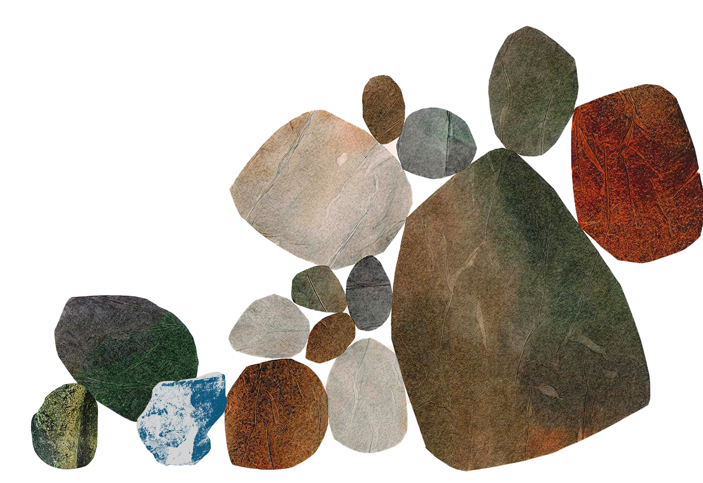

The choices we make now will define how a generation thinks and writes.
Marker is a writing space for what's still taking shape.
Write with us.

Learn more
Marker is a writing space built for serious thinking. It's focused, flexible, and made for ideas to take shape — whether you're drafting, outlining, or working through something that isn't finished yet.
Marker is for writers, thinkers, and anyone who works with words. If you care about how ideas come together — not just how they look — Marker is for you.
We're building Marker thoughtfully and releasing access in waves. Sign up for the waiting list to be among the first to use it.
Most writing tools optimize for output. Marker is designed for the process — the rough drafts, the half-formed thoughts, the work that happens before something is ready to share.
We'll share pricing details closer to launch. Our goal is to make Marker accessible to anyone who takes writing seriously.